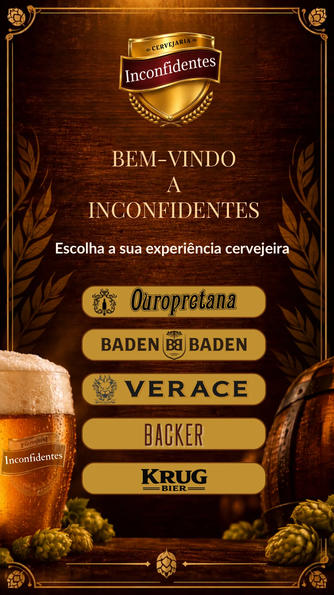

Experiências digitais
Muito além de um catálogo. Criamos experiências que despertam curiosidade, facilitam a navegação e valorizam cada detalhe.
PLATAFORMA DE EXPERIÊNCIAS DIGITAIS
Sua marca merece ser vivida.
Criamos experiências digitais que aproximam pessoas, produtos e marcas.
POSSIBILIDADES
Muito além de um catálogo. Criamos experiências que despertam curiosidade, facilitam a navegação e valorizam cada detalhe.
Cada projeto possui personalidade própria. Sua empresa nunca será apenas mais uma dentro de um modelo genérico.
Seu conteúdo evolui sem exigir um novo QR Code. O endereço permanece; a experiência fica sempre atualizada.
Cada botão, cor, movimento e espaço tem uma função. Design bonito, mas sempre pensado para gerar resultado.
PROJETO EM DESTAQUE

CERVEJARIA · CATÁLOGO INTERATIVO
Uma experiência digital criada para simplificar a navegação por dezenas de rótulos, preservar a identidade visual e permitir atualizações sem trocar o QR Code.
NOSSA FORMA DE PENSAR
VAMOS CONVERSAR
Projetos digitais exclusivos, pensados para a forma como seus clientes descobrem, exploram e vivem a sua empresa.
Solicitar um projeto